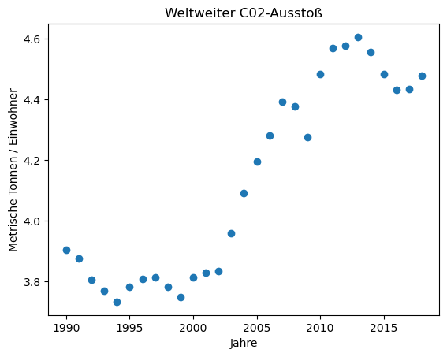
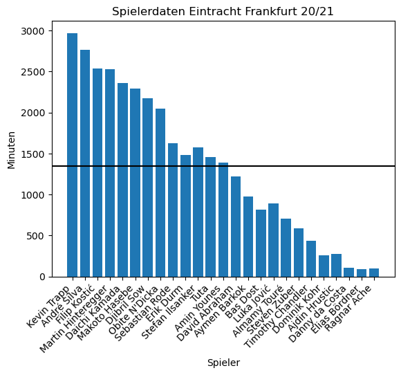
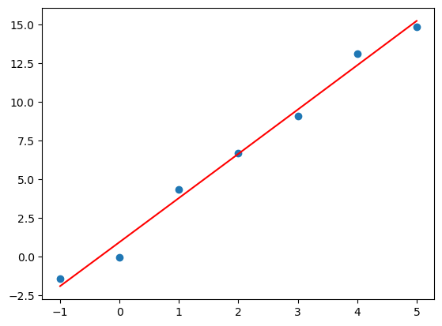
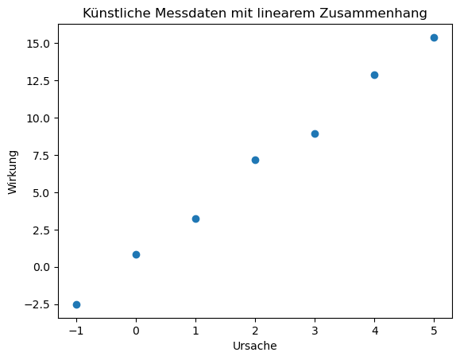
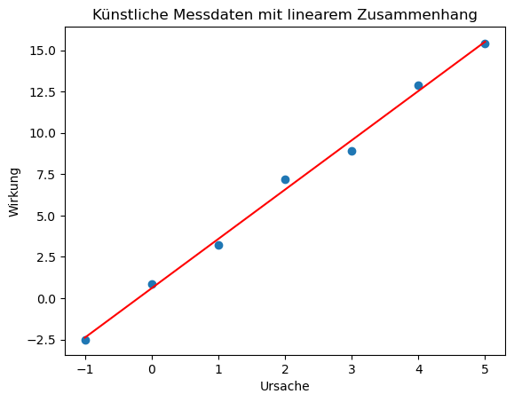

Contents
import pandas as pd
data = pd.read_csv('data/co2_emissionen_worldwide.csv', skiprows=1, index_col=0)
data.head()
| Metrische_Tonnen_pro_Einwohner | |
|---|---|
| Jahr | |
| 1990 | 3.902952 |
| 1991 | 3.874590 |
| 1992 | 3.804011 |
| 1993 | 3.769328 |
| 1994 | 3.732385 |
print(data.info())
print(data.describe())
<class 'pandas.core.frame.DataFrame'>
Int64Index: 29 entries, 1990 to 2018
Data columns (total 1 columns):
# Column Non-Null Count Dtype
--- ------ -------------- -----
0 Metrische_Tonnen_pro_Einwohner 29 non-null float64
dtypes: float64(1)
memory usage: 464.0 bytes
None
Metrische_Tonnen_pro_Einwohner
count 29.000000
mean 4.126993
std 0.324550
min 3.732385
25% 3.812655
50% 4.092267
75% 4.435536
max 4.606487
import matplotlib.pylab as plt
jahre = data.index
co2 = data.loc[:, 'Metrische_Tonnen_pro_Einwohner']
plt.figure()
plt.scatter(jahre, co2)
plt.xlabel('Jahre')
plt.ylabel('Metrische Tonnen / Einwohner')
plt.title('Weltweiter C02-Ausstoß');

import numpy as np
x_modell = np.linspace(1990, 2018, 100)
m = 0.0344
b = -64.7516
y_modell = m * x_modell + b
plt.figure()
plt.scatter(jahre,co2)
plt.plot(x_modell, y_modell, color='red')
plt.xlabel('Jahr')
plt.ylabel('Metrische Tonnen pro Einwohner')
plt.title('Weltweiter CO2-Ausstoß von 1990 bis 2018');

# blaue y-Koordinaten = Messpunkte
y_blau = co2
# Berechnung der roten y-Koordinaten, indem wir x-Koordinaten der Messpunkte
# in die Modellfunktion y = m*x + b einsetzen
x = jahre
y_rot = 0.0344 * x - 64.7516
# Berechnung Gesamtfehler
N = 29
gesamtfehler = 1/N * np.sum( (y_blau - y_rot)**2 )
print(f'Der Gesamtfehler ist {gesamtfehler}.')
Der Gesamtfehler ist 0.02248906646562731.
y_mittelwert = y_blau.mean()
gesamtfehler_mittelwert = 1/N * np.sum( (y_blau - y_mittelwert)**2 )
print(f'Der Gesamtfehler für den Mittelwert als Schätzung ist {gesamtfehler_mittelwert}.')
Der Gesamtfehler für den Mittelwert als Schätzung ist 0.10170059696116414.
relativer_fehler = gesamtfehler / gesamtfehler_mittelwert
print(f'Der relative Fehler der Modellfunktion im Verhältnis zum Fehler beim Mittelwert ist: {relativer_fehler:.4f}')
print(f'In Prozent umgerechnet ist das: {relativer_fehler * 100:.2f} %.')
Der relative Fehler der Modellfunktion im Verhältnis zum Fehler beim Mittelwert ist: 0.2211
In Prozent umgerechnet ist das: 22.11 %.
import matplotlib.pylab as plt
import numpy as np
x = np.array([-1, 0, 1, 2, 3, 4, 5])
y = 3 * x + np.random.normal(1, 0.5, 7)
plt.figure()
plt.scatter(x,y)
<matplotlib.collections.PathCollection at 0x128e41270>
print(y)
[-1.88668204 1.14595541 4.7803892 6.87552292 10.27837096 13.47827241
16.90804357]
from numpy.polynomial.polynomial import polyfit
p = polyfit(x, y, 2)
print(p)
[1.18663945 2.97531709 0.02890995]
a = p[2]
b = p[1]
c = p[0]
plt.figure();
plt.scatter(x,y);
x_plot = np.linspace(-1, 5, 100);
y_plot = a * x_plot**2 + b * x_plot + c
plt.plot(x_plot, y_plot, color='red');

import matplotlib.pylab as plt
x = [-1, 0, 1, 2, 3, 4, 5]
y = [-2.52, 0.85, 3.21, 7.19, 8.93, 12.89, 15.40]
plt.figure()
plt.scatter(x,y)
plt.xlabel('Ursache')
plt.ylabel('Wirkung')
plt.title('Künstliche Messdaten mit linearem Zusammenhang');

import numpy as np
koeffizienten = np.polyfit(x,y, 1)
print(koeffizienten)
[2.98428571 0.59571429]
# Wertetabelle für Regressionsgerade
x_modell = np.linspace(-1, 5)
y_modell = np.polyval(koeffizienten, x_modell)
# Visualisierung Messwerte und Regressionsgerade
plt.figure()
plt.scatter(x,y)
plt.plot(x_modell, y_modell, color='red')
plt.xlabel('Ursache')
plt.ylabel('Wirkung')
plt.title('Künstliche Messdaten mit linearem Zusammenhang');

# künstliche Messdaten
x = [-1, 0, 1, 2, 3, 4, 5]
y = [5.4384, 14.3252, 19.2451, 23.3703, 18.2885, 13.8978, 3.7586]
plt.figure()
plt.scatter(x,y, color='black')
plt.xlabel('Ursache')
plt.ylabel('Wirkung')
plt.title('Künstliche Messdaten')
x_plot = np.linspace(-1,5)
for grad in [5, 6, 7, 8]:
# berechne Regressionspolynom
p = np.polyfit(x, y, grad)
y_plot = np.polyval(p, x_plot)
# visualisiere zusätzlich das Regressionspolynon
plt.plot(x_plot, y_plot, label=f'Grad {grad}')
plt.legend();
/opt/homebrew/Caskroom/miniconda/base/envs/turtle/lib/python3.10/site-packages/IPython/core/interactiveshell.py:3442: RankWarning: Polyfit may be poorly conditioned
exec(code_obj, self.user_global_ns, self.user_ns)
/opt/homebrew/Caskroom/miniconda/base/envs/turtle/lib/python3.10/site-packages/IPython/core/interactiveshell.py:3442: RankWarning: Polyfit may be poorly conditioned
exec(code_obj, self.user_global_ns, self.user_ns)
def berechne_r2(y, y_modell):
N = len(y)
y_mittelwert = 0
for messwert in y:
y_mittelwert = y_mittelwert + messwert
y_mittelwert = y_mittelwert / N
zaehler = 0
nenner = 0
for i in range(N):
zaehler = zaehler + (y[i] - y_modell[i])**2
nenner = nenner + (y[i] - y_mittelwert)**2
r2 = 1 - zaehler / nenner
return r2
r2_liste = []
for grad in [1,2,3,4,5,6,7,8,9,10]:
p = np.polyfit(x, y, grad)
y_modell = np.polyval(p, x)
r2 = berechne_r2(y, y_modell)
r2_liste.append(r2)
for i in range(9):
print(f'Polynomgrad {i+1}: R2 = {r2_liste[i]}')
Polynomgrad 1: R2 = 0.0053725351543482125
Polynomgrad 2: R2 = 0.983379214645667
Polynomgrad 3: R2 = 0.9834259558402986
Polynomgrad 4: R2 = 0.9846874808354835
Polynomgrad 5: R2 = 0.9855495609154395
Polynomgrad 6: R2 = 1.0
Polynomgrad 7: R2 = 1.0
Polynomgrad 8: R2 = 1.0
Polynomgrad 9: R2 = 1.0
/opt/homebrew/Caskroom/miniconda/base/envs/turtle/lib/python3.10/site-packages/IPython/core/interactiveshell.py:3442: RankWarning: Polyfit may be poorly conditioned
exec(code_obj, self.user_global_ns, self.user_ns)
/opt/homebrew/Caskroom/miniconda/base/envs/turtle/lib/python3.10/site-packages/IPython/core/interactiveshell.py:3442: RankWarning: Polyfit may be poorly conditioned
exec(code_obj, self.user_global_ns, self.user_ns)
/opt/homebrew/Caskroom/miniconda/base/envs/turtle/lib/python3.10/site-packages/IPython/core/interactiveshell.py:3442: RankWarning: Polyfit may be poorly conditioned
exec(code_obj, self.user_global_ns, self.user_ns)
/opt/homebrew/Caskroom/miniconda/base/envs/turtle/lib/python3.10/site-packages/IPython/core/interactiveshell.py:3442: RankWarning: Polyfit may be poorly conditioned
exec(code_obj, self.user_global_ns, self.user_ns)